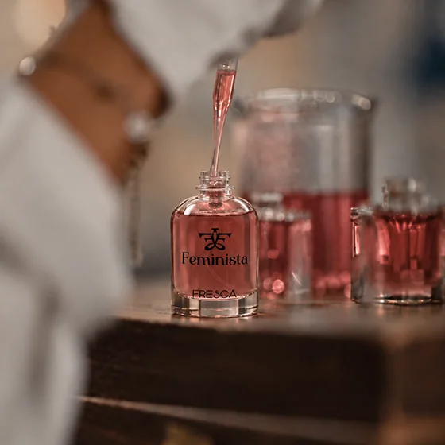
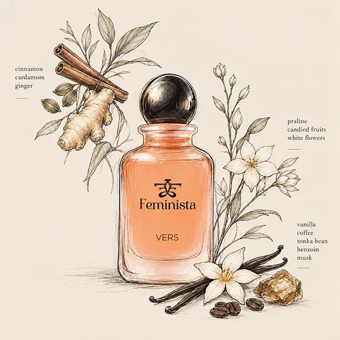

Home / Our Story
Our story
The House of Feminista
Feminista is built on a simple belief: femininity has never belonged to a single definition. It is layered, ever-changing, and beautifully individual. There is beauty in her contrasts, mystery in her choices, and something unexpected in every side of her.
Our fragrances explore these many expressions through notes that unfold, contrasts that surprise, and impressions that stay. Each fragrance reveals its own character, one layer at a time. Because there is always more to her than the first impression.



Every Feminista composition begins with patience. Rare absolutes and naturals are sourced with care, then left to mature in quiet stillness for nearly 180 days — long enough for each note to soften into the next, until the fragrance no longer smells of ingredients, but of a woman.
This patience is not a marketing point — it is the House's only method. We believe a fragrance rushed to market is a fragrance left unfinished, and Feminista would rather arrive late than incomplete.
From rare botanicals to the rarest naturals, every ingredient earns its place. Nothing is added for volume — only for the depth, character and signature it leaves behind.
Our philosophy
What Feminista stands for
Femininity
Femininity has no single definition. It can be soft and commanding, graceful and fearless, intimate and entirely individual.
Presence
Each composition is thoughtfully balanced to complement her presence — not define it. Fragrance should not introduce her. It should leave her remembered.
Craftsmanship
Crafted with carefully selected ingredients and matured with patience, every fragrance unfolds slowly, revealing depth and character.
The collection